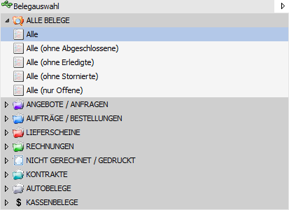
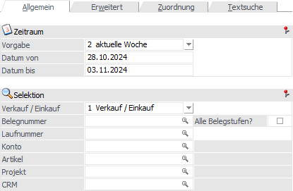
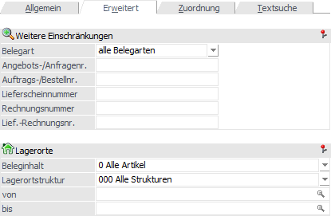
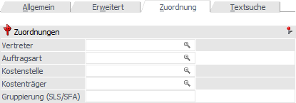
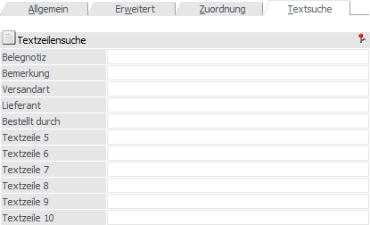

In dem Bereich "Selektion" kann definiert werden, welche Belege angezeigt werden sollen. Dieser befindet sich im linken Teil des Fensters und kann bei Bedarf zugeklappt werden. Die Suche selber kann per Button "Anzeigen" oder der Taste F5 ausgelöst werden.

Belegauswahl

In der Belegauswahl kann die Art der Belege ausgewählt werden, welche angezeigt werden sollen. Innerhalb der einzelnen Belegstufe stehen für eine feiner Selektion Auswahlen wie "Offene" oder "Erledigte" zur Verfügung.
Register "Allgemein"

Ø Zeitraum
Mit Hilfe der Auswahl "Vorgabe" kann der Zeitraum ausgewählt werden, in welchem das Belegdatum der anzuzeigenden Belege liegen soll. Folgende Vorgaben stehen zur Verfügung:
ü 1 - Heute
ü 2 - aktuelle Woche
ü 3 - letzte 7 Tage
ü 4 - letzte 14 Tage
ü 5 - aktueller Monat
ü 6 - 1. Quartal
ü 7 - 2. Quartal
ü 8 - 3. Quartal
ü 9 - 4. Quartal
ü 10 - aktuelles Jahr
ü 11 - Vorjahr
ü 12 - Alle
ü 13 - Individuell
Aufgrund der Vorgabe werden die Felder "Datum von" und "Datum bis" gefüllt, welche aber manuell überschrieben werden können.
Ø Verkauf / Einkauf
An dieser Stelle kann definiert werden, ob Belege des Typs "2- Verkauf", "3 - Einkauf" oder "1 - Verkauf / Einkauf" angezeigt werden sollen.
Ø Belegnummer
Durch die Eingabe der Belegnummer kann eine Selektion auf die Belegnummer durchgeführt werden. Das Ergebnis der hier angebotenen Autovervollständigung ist abhängig von den folgenden Einstellungen:
ü Belegauswahl
ü Verkauf / Einkauf
ü Option "Alle Belegstufen?"
Hinweis
Durch Drücken der F3-Taste kann der letzte Beleg (Kontonummer - Laufnummer) übernommen werden, wobei insgesamt die letzten 20 Belege zur Verfügung stehen. Wird die Eingabe mit der Enter-Taste bestätigt, so werden die Felder "Laufnummer" und "Kontonummer" gefüllt und der Beleg sofort angezeigt. Mit der Tastenkombination SHIFT+F3 kann die Reihenfolge umgekehrt werden.
Ø Alle Belegstufen?
Durch Aktivierung der Option "Alle Belegstufen?" wird nach der Belegnummer in allen Belegstufen gesucht und nicht nur in der aktuellen Stufe des jeweiligen Belegs.
Ø Laufnummer
An dieser Stelle kann die Laufnummer eingegeben werden, nach welcher gesucht werden soll.
Hinweis
Durch Drücken der F3-Taste kann der letzte Beleg (Kontonummer - Laufnummer) übernommen werden, wobei insgesamt die letzten 20 Belege zur Verfügung stehen. Wird die Eingabe mit der Enter-Taste bestätigt, so werden die Felder "Laufnummer" und "Kontonummer" gefüllt und der Beleg sofort angezeigt. Mit der Tastenkombination SHIFT+F3 kann die Reihenfolge umgekehrt werden.
Ø Alle Belege (nur "Belege - Matchcode")
Wenn bei dem Öffnen des Matchcodes in der Belegauswahl nur bestimmte Belegstufen zur Auswahl stehen, so kann mit Hilfe des Buttons die Belegübersicht geöffnet werden.
Ø Konto
Durch die Hinterlegung einer Kontonummer werden nur Belege des Kontos angezeigt.
Hinweis
Im Kontenmatch können mehrere Konten markiert und per Drag & Drop in das Programm "Belege" übergeben werden. Hierdurch wird ein temporärer Filter mit dem Operator "DD" erzeugt, welcher die zuvor markierten Konten in sich trägt.
Ø Artikel
Durch die Hinterlegung einer Artikelnummer werden nur Belege angezeigt, in welchen der Artikel vorkommt.
Hinweis 1
Im Artikelmatch können mehrere Artikel markiert und per Drag & Drop in das Programm "Belege" übergeben werden. Hierdurch wird ein temporärer Filter mit dem Operator "DD" erzeugt, welcher die zuvor markierten Artikel in sich trägt.
Hinweis 2
Durch Eingabe des %-Zeichens erfolgt eine sogenannte "Wie"-Suche.
Beispiel
Bei der Eingabe von "10022%" werden all jene Belege angezeigt, bei welchen die Artikelnummer mit "10022" beginnt und irgendwie endet.
Ø Projekt
Durch die Hinterlegung einer Projektnummer werden nur Belege angezeigt, in deren Belegkopf das Projekt zugeordnet wurde.
Hinweis
Im Projektmatch können mehrere Projekte markiert und per Drag & Drop in das Programm "Belege" übergeben werden. Hierdurch wird ein temporärer Filter mit dem Operator "DD" erzeugt, welcher die zuvor markierten Projekte in sich trägt.
Ø CRM
Durch die Hinterlegung eines CRM-Fall werden nur Belege angezeigt, bei welche dieser Fall zugeordnet wurde.
Register "Erweitert"

Ø Belegart
Mit Hilfe einer Auswahlliste kann nach der Belegart der anzuzeigenden Belege gefiltert werden.
Ø Angebots-/Anfragenr. / Auftrags-/Bestellnr. / Lieferscheinnummer / Rechnungsnummer / Lief.-Rechnungsnr.
In diesen Feldern kann gezielt nach der Nummer des zu suchenden Belegs selektiert werden. Das Ergebnis der hier angebotenen Autovervollständigung ist zum Teil abhängig von der Einstellung "Verkauf / Einkauf".
Ø Lagerortstruktur
In dem Feld "Lagerortstruktur" kann mit Hilfe einer Auswahlliste die auszuwertende Struktur gewählt werden. D.h. es werden in der weiteren Folge, abhängig von der Einstellung "Ausgabe", (nur) jene Belege aufgelistet, in welchen Lagerortartikel mit der angegebenen Lagerortstruktur vorkommen.
Hinweis
Durch Auswahl einer Struktur steht der auszuwertende Lagerortbereich fest und die nachfolgenden Felder ("Lagerort von / bis") stehen für eine Eingabe nicht zur Verfügung.
Ø Lagerort von / bis
An dieser Stelle kann der auszuwertende Lagerort bzw. der Lagerortbereich über eine "von / bis"-Selektion angegeben werden. D.h. es werden in der weiteren Folge, abhängig von der Einstellung "Ausgabe", (nur) jene Belege aufgelistet, in welchen Lagerortartikel mit dem angegebenen Lagerort bzw. dem Lagerortbereich vorkommen.
Hinweis
Wird in dem Feld "von Lagerort" ein Ort angegeben, welcher nicht der letzten Hierarchie-Ebene entspricht, so wird in das Feld "bis Lagerort" automatisch der letzte Lagerort der darunterliegenden Hierarchie-Ebenen eingetragen.
Ø Ausgabe
An dieser Stelle kann definiert werden, ob Artikel mit bzw. ohne Lagerortstruktur berücksichtigt werden sollen (Einstellung wird benutzerspezifisch gespeichert). Folgende Varianten stehen zur Verfügung:
ü 0 - Alle Artikel
In den Artikel
können Artikel mit und ohne Lagerortstruktur vorhanden sein.
ü 1 - Nur Artikel mit
Lagerortstruktur
In den Belegen muss zumindest ein Artikel mit
Lagerortstruktur vorhanden sein.
ü 2 - Nur Artikel ohne
Lagerortstruktur
In den Belegen muss zumindest ein Artikel ohne
Lagerortstruktur vorhanden sein. Da in diesem Fall die Selektion nach Lagerorten
nicht notwendig ist, werden jene Felder für eine Eingabe gesperrt.
Register "Zuordnung"

Ø Vertreter
Durch die Hinterlegung einer Vertreternummer werden nur jene Belege angezeigt, in welchen im Kopfbereich der Vertreter zugeordnet wurde.
Ø Auftragsart
An dieser Stelle kann nach der Auftragsart des Belegs selektiert werden.
Ø Kostenstelle
Durch Hinterlegung einer Kostenstelle werden nur jene Belege angezeigt, in welchen im Kopfbereich die Kostenstelle zugeordnet wurde.
Ø Kostenträger
Durch Hinterlegung eines Kostenträgers werden nur jene Belege angezeigt, in welchen im Kopfbereich die Kostenträger zugeordnet wurde.
Ø Gruppierung (SLS/SFA)
Hier kann eine Selektion auf Grundlage des Felds "Gruppierung (SLS/SFA)" erfolgen.
Register "Textsuche"

Ø Belegnotiz / Textzeile 1 bis Textzeile 9
Mit Hilfe dieser 10 Felder kann nach einem Text, welcher im Kopf des Belegs definiert wurde, gesucht werden.